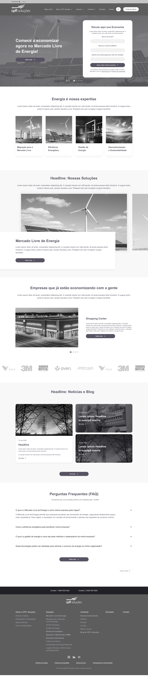
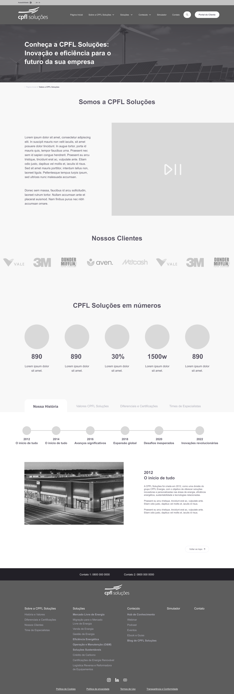
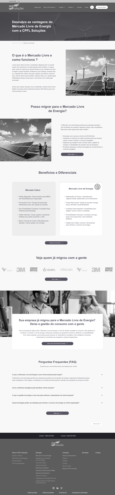
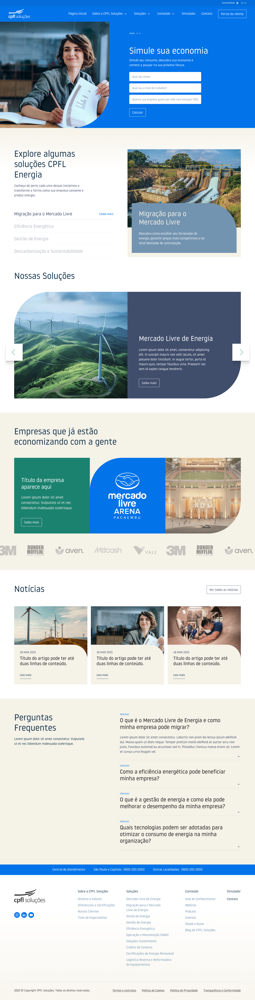

CPFL
Soluções.
CPFL
Soluções.
Stakeholder Research for
a Strategic Website Redesign
Pesquisa com Stakeholders para
Redesign Estratégico do Site
Transforming the site into
a strategic platform
Transformar o site em
uma plataforma estratégica
CPFL Soluções faces the challenge of transforming its website into a strategic platform, one that reflects its leadership in the energy sector and meets customer needs. A CPFL Soluções enfrenta o desafio de transformar seu site em uma plataforma estratégica, capaz de refletir sua liderança no setor de energia e atender às necessidades dos clientes.
The current website has limitations that impact brand perception, commercial efficiency, and user experience. O site atual apresenta limitações que impactam a percepção da marca, a eficiência comercial e a experiência do usuário.
To address this challenge, we conducted interviews with strategic stakeholders, collecting perceptions, pain points, and ideas. These learnings guide the project's alignment with the real needs of users. Para abordar esse desafio, realizamos entrevistas com stakeholders estratégicos, coletando percepções, dores e ideias. Esses aprendizados orientam o alinhamento do projeto às reais necessidades dos usuários.
The goal: collect perceptions, pain points, and ideas to guide the website redesign, aligning it with market needs and user expectations. O objetivo: coletar percepções, dores e ideias para guiar a reformulação do site, alinhando-o às necessidades do mercado e dos usuários.
14 strategic leaders
across 9 sessions
14 líderes estratégicos
em 9 sessões
When: December 26 to January 10
Who: Managers and specialists from areas such as Commercial, Marketing, CX, Operations, and Sustainability.
Quando: 26 de Dezembro a 10 de Janeiro
Com quem: Gestores e especialistas de áreas como Comercial, Marketing, CX, Operações e Sustentabilidade.
Key topics: Digital communication challenges, retail & wholesale customer needs, competitive best practices, and expected features for the new website. Principais temas: Desafios na comunicação digital, necessidades dos clientes no varejo e atacado, concorrência e boas práticas do mercado, funcionalidades esperadas no novo site.
Who participated? Quem participou?
We interviewed leaders and specialists across 8 strategic departments, each bringing unique perspectives on the website's challenges and opportunities. Entrevistamos líderes e especialistas em 8 departamentos estratégicos, cada um trazendo perspectivas únicas sobre os desafios e oportunidades do site.
What we heard O que ouvimos
Across 8 departments, we identified recurring pain points and generated actionable insights to guide the website redesign. Em 8 departamentos, identificamos dores recorrentes e geramos insights acionáveis para guiar a reformulação do site.
- Site doesn't support retention and post-sales strategiesO site não apoia estratégias de retenção e pós-venda
- Unclear communication about free energy market benefits for different client profilesFalta de comunicação clara sobre os benefícios do mercado livre para diferentes perfis
- Doesn't strategically address C-level decision makers at large companiesNão aborda de forma estratégica decisores como diretores e presidentes
- Add personalized sections for retail and wholesale audiencesIncorporar seções personalizadas para varejo e atacado
- Use success stories to communicate free energy market benefitsUtilizar cases de sucesso para comunicar os benefícios do mercado livre
- Reinforce the site as an educational and strategic support channelReforçar a função do site como canal educativo e de suporte estratégico
- Hard-to-find information hurts the user experienceInformações difíceis de encontrar prejudicam a experiência do usuário
- No FAQ section or educational materialsAusência de FAQs e materiais educativos
- Site doesn't reflect CPFL Soluções' authority in the marketO site não reflete a autoridade da CPFL Soluções no mercado
- Reorganize menu and categories for a more intuitive experienceReorganizar o menu e as categorias para uma experiência mais intuitiva
- Add FAQs, videos, and infographicsAdicionar FAQs, vídeos e infográficos
- Position the site as a knowledge reference about the free energy marketPosicionar o site como referência em conhecimento sobre o mercado livre
- Free energy market complexity isn't well explained, hurting lead qualificationA complexidade do mercado livre não é bem explicada, prejudicando a qualificação de leads
- No practical support materials for salespeople during negotiationsSem materiais de apoio práticos para vendedores durante negociações
- Overly technical language for small business ownersLinguagem técnica demais para pequenos empresários
- Include educational materials with accessible languageIncluir materiais educativos com linguagem acessível
- Create a sales support area with presentations and simulatorsCriar uma área de suporte de vendas com apresentações e simuladores
- Add success stories and client testimonialsAdicionar histórias de sucesso e depoimentos de clientes
- Recurring confusion between CPFL Energia and CPFL SoluçõesConfusão recorrente entre CPFL Energia e CPFL Soluções
- Competitive differentiators not highlightedDiferenciais competitivos não destacados
- Insufficient communication about risks and benefits of the free marketComunicação insuficiente sobre riscos e benefícios do mercado livre
- Reinforce CPFL Soluções identity vs. CPFL EnergiaReforçar a identidade da CPFL Soluções vs. CPFL Energia
- Implement a blog with educational content and industry news for SEOImplementar blog com conteúdo educativo e notícias do setor para SEO
- Use real stories, success cases, and impact projects for connectionUsar histórias reais, cases de sucesso e projetos de impacto
What the competition teaches O que a concorrência ensina
We analyzed 7 competitors cited by stakeholders as references in communication, digital presence, and innovation in the energy sector. Analisamos 7 concorrentes citados pelos stakeholders como referências em comunicação, presença digital e inovação no setor de energia.
Key learnings: Communicate solutions clearly. Use digital tools like simulators and FAQs to educate clients. Create storytelling that connects the brand to sustainability and innovation. Principais lições: Comunicar soluções de forma clara. Usar ferramentas digitais como simuladores e FAQs para educar clientes. Criar storytelling que conecte a marca à sustentabilidade e inovação.
Listening to those who
actually use the service.
Ouvindo quem
realmente usa o serviço.
After stakeholder interviews and competitive analysis, we conducted 10 in-depth interviews with real clients — from small business owners to industrial directors — to understand their frustrations, expectations, and decision-making processes when dealing with energy providers. Após as entrevistas com stakeholders e a análise competitiva, realizamos 10 entrevistas em profundidade com clientes reais — de pequenos empresários a diretores industriais — para entender suas frustrações, expectativas e processos de tomada de decisão ao lidar com fornecedores de energia.
When: January 20 to February 7, 2025
Who: Managers, directors, coordinators, and business owners from industries such as ceramics, auto parts, logistics, biomass, metallurgy, packaging, and plastics.
Quando: 20 de janeiro a 7 de fevereiro de 2025
Quem: Gerentes, diretores, coordenadores e proprietários de empresas de indústrias como cerâmica, autopeças, logística, biomassa, metalurgia, embalagens e plásticos.
Objectives: Objetivos:
Understand the difficulties users face when interacting with the CPFL website and during processes like migrating to the free energy market. Collect data on frustrations and expectations regarding communication, technical support, and site navigation. Identify improvement areas to make the site more intuitive, agile, and efficient. Compreender as dificuldades enfrentadas pelos usuários ao interagir com o site da CPFL e durante processos como a migração para o mercado livre de energia. Coletar dados sobre frustrações e expectativas em relação à comunicação, suporte técnico e navegação no site. Identificar áreas de melhoria para tornar o site mais intuitivo, ágil e eficiente.
Two critical patterns
across all interviews.
Dois padrões críticos
em todas as entrevistas.
Across 10 client interviews, two recurring pain points emerged as the most impactful barriers — shaping the strategic direction for the website redesign. Ao longo de 10 entrevistas com clientes, dois pontos de dor recorrentes surgiram como as barreiras mais impactantes — moldando a direção estratégica para o redesign do site.
- Multiple contact points with no shared history, forcing users to repeat themselvesMúltiplos pontos de contato sem histórico compartilhado, forçando usuários a se repetirem
- No dedicated person assigned to follow cases end-to-endNenhuma pessoa dedicada designada para acompanhar os casos do início ao fim
- Feeling of abandonment after initial contact, especially during migrationSensação de abandono após o contato inicial, especialmente durante a migração
- Implement user profiles that track full interaction historyImplementar perfis de usuário que acompanhem todo o histórico de interações
- Adopt live chat with personalized responses and quick access to user historyAdotar chat ao vivo com respostas personalizadas e acesso rápido ao histórico do usuário
- Users can't find clear information about tariffs, migration process, and benefitsUsuários não encontram informações claras sobre tarifas, processo de migração e benefícios
- Data is dispersed and difficult to understand, especially for non-technical profilesDados dispersos e difíceis de entender, especialmente para perfis não técnicos
- Users feel lost navigating between CPFL Soluções and CPFL DistribuiçãoUsuários se sentem perdidos navegando entre CPFL Soluções e CPFL Distribuição
- Create highlighted sections with organized tariff and benefit informationCriar seções destacadas com informações organizadas sobre tarifas e benefícios
- Offer an interactive step-by-step migration flow with transparent details at each stageOferecer fluxo de migração interativo passo a passo com detalhes transparentes em cada etapa
Key takeaway: The stakeholder interviews revealed internal misalignment and brand confusion. The user interviews confirmed this externally — clients were losing trust due to fragmented communication and opaque processes. Both sources pointed to the same solution: clarity, continuity, and transparency. Principal aprendizado: As entrevistas com stakeholders revelaram desalinhamento interno e confusão de marca. As entrevistas com usuários confirmaram isso externamente — clientes perdiam confiança por comunicação fragmentada e processos opacos. Ambas as fontes apontaram para a mesma solução: clareza, continuidade e transparência.
Lessons and strategies
for the new site
Lições e estratégias
para o novo site
Combining insights from 14 stakeholders, 10 user interviews, and 7 competitor benchmarks, we defined six strategic pillars to guide the website redesign. Combinando insights de 14 stakeholders, 10 entrevistas com usuários e 7 benchmarks de concorrentes, definimos seis pilares estratégicos para guiar o redesign do site.
- Content hub for SEO and organic reachHub de conteúdo para SEO e alcance orgânico
- Success cases and innovation highlightsCases de sucesso e destaques de inovação
- Efficient search bar with auto-suggestionsBarra de busca eficiente com sugestões automáticas
- Responsive design for different client profilesDesign responsivo para diferentes perfis de clientes
- Comprehensive FAQ sectionSeção abrangente de FAQs
- Articles, videos, and infographicsArtigos, vídeos e infográficos
- Library segmented by client typeBiblioteca segmentada por tipo de cliente
- Simulated scenarios with projected savingsCenários simulados com economia projetada
- Practical, jargon-free copyTextos práticos, sem jargões técnicos
- Quick support channels (WhatsApp, chatbot)Canais rápidos de atendimento (WhatsApp, chatbot)
- Dedicated ESG section with reverse logistics infoSeção dedicada a ESG com info sobre logística reversa
- SEO keywords for sustainabilityPalavras-chave de SEO para sustentabilidade
From research
to live product.
Da pesquisa
ao produto no ar.
The research insights were translated into wireframes, validated with stakeholders, and evolved into the final screens. The redesigned website is currently live. Os insights da pesquisa foram traduzidos em wireframes, validados com stakeholders e evoluíram para as telas finais. O site redesenhado está atualmente no ar.




The redesigned website is currently live and accessible at: O site redesenhado está atualmente no ar e acessível em:
↗ Visit cpflsolucoes.com.br ↗ Visitar cpflsolucoes.com.br"Interviewing 14 strategic leaders and 10 real clients, synthesizing cross-departmental and user pain points, and translating all voices into actionable strategies and wireframes for the website redesign — that was the work." "Entrevistar 14 líderes estratégicos e 10 clientes reais, sintetizar dores entre departamentos e dos usuários, e traduzir todas as vozes em estratégias acionáveis e wireframes para a reformulação do site — esse foi o trabalho."
through complex products? Interessado em como eu penso
produtos complexos?